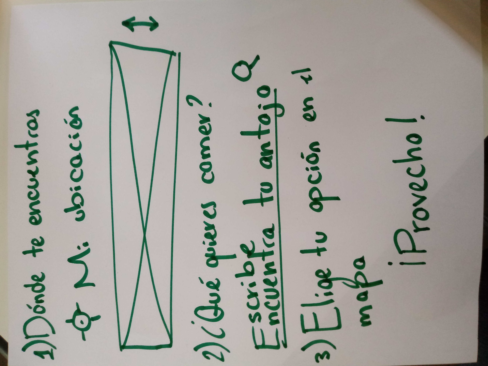

üç¥ Yummy Finder

App dise√±ada para uso en celulares üì±, donde puedes encontrar los mejores restaurantes de la CDMX con base en tu ubicaci√≥n.
üìä Benchmark
Benchmark de dos aplicaciones con funcionalidad semejante, elegidas en base a su éxito y número de usuarios registrados.
Yelp
- Fundada en 2004 para ayudar a las personas a encontrar los mejores negocios en su localidad.
- Tiene un promedio mensual de 30 millones de visitantes únicos dentro de la app y 70 millones de visitantes únicos en su versión móvil.
- Sus usuarios se identifican como Yelpers, los cuales han escrito más de 155 millones de reseñas sobre negocios hasta el 2018.
Foursquare
- Foursquare es una compañía de tecnología que busca usar la ubicación inteligente para ayudar a sus usuarios a descubrir nuevos lugares en base a las recomendaciones de otros.
- Su comunidad está formada por más de 50 millones de personas que hacen uso a través del computador y aplicaciones móviles.
- Con más de 12 mil millones de check-ins, con un récord de más de 9 millones de check-ins en un mismo día.
- Más de 105 millones de lugares mapeados alrededor del mundo.
⬇️ Flujo de la aplicación
Diseño guiado de forma sencilla e intuitiva, para dar a conocer a la usuaria a través de la aplicación, por medio de textos breves, numerados que le permitirán llegar a su objetivo en el menor tiempo posible con calma y entendimiento del proceso.
